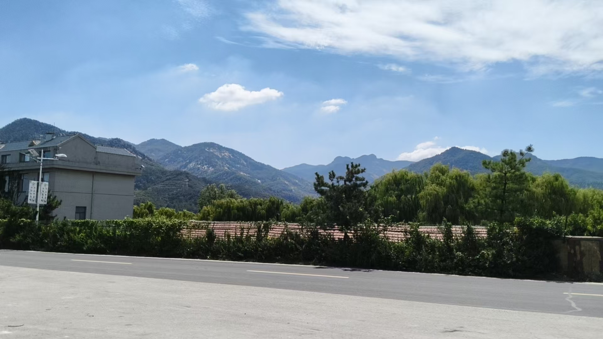
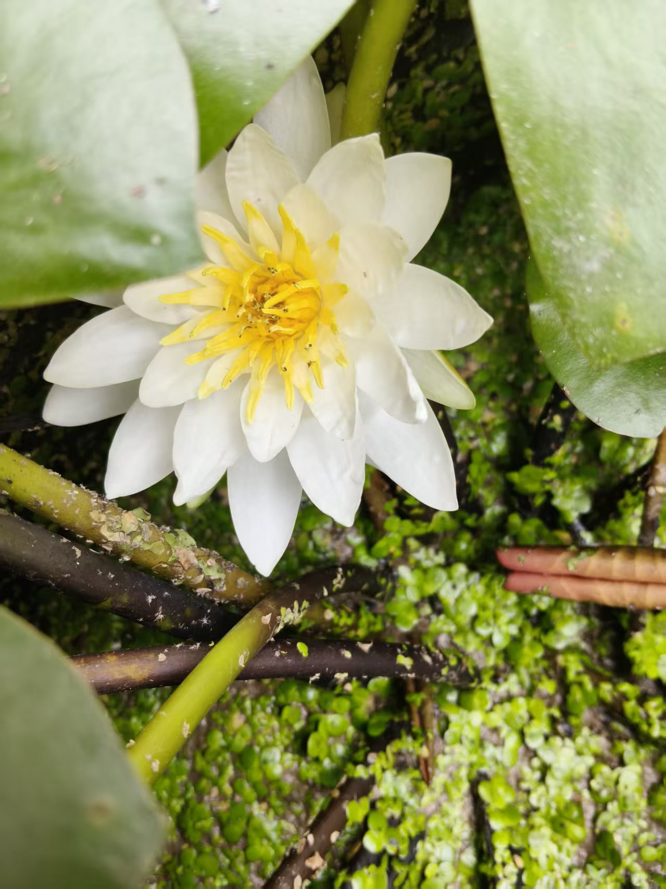

20260907看风水 整个家族的阴宅
风水布局占卜预测奇门遁甲 原始对话记录
竟然来了沂山水库
整个家族的阴宅，看完了
行云流水
佩服的不得了
阴宅坐男朝北，南边矮山，北边水沟，家族里多女少男
确实是女的生煞，走了三年了
大醉
而归
家猫从来不敢进屋
家族风水，
跟介绍人比较熟，看面子，收了五千

破茧成蝶
所以，我说一技可以养家
艺大不压身
以前有学生提出，学了不能赚钱
先得神通，后学术
学奇门，学风水，等等，去使用就能赚钱
还有这些证书
我给福主发过去
泰斗，教授
高级风水师
高级预测试
发过这些名头去，人家就觉得要一万两万，确实值
再说，人家聊天，说自己的风水是谁谁谁看的，是易学泰斗，聊起来也觉得有面子
十几年前，我也是在蒋峪点穴
那老头就直接说，才要六百，到底会不会
别给我搞坏了
后来，外出风水，一般就是两万
要少了，人家觉得不一定行
看家族阴宅：坐南朝北与"多女少男"的形峦
一、本页记录了什么
本页记一次家族阴宅勘察：地点在沂山水库一带，看的是"整个家族的阴宅"；记录者写下地形判断与"多女少男"的断语，也谈到收费与名头。文字零散，此处按原记录转述。
二、阴宅看什么：砂、水、向
传统阴宅堪舆，重点在砂（四周高起）、水（来去水路）、向（坐向）三样。看家族阴宅，就是看这些要素对某一房、某一支的"应验"。这套思路与"消砂纳水"一脉相承（见本集群《赖公消砂掌诀》）。
三、"坐南朝北、南矮山、北水沟"的解读
记录原文写作"阴宅坐男朝北"，按后半句"南边矮山、北边水沟"判断，应指坐南朝北（南为靠山、北为朝向）。据此记下：
- 南边矮山——靠山低矮；
- 北边水沟——向首有水且是沟；
- 断语："家族里多女少男"，"确实是女的生煞，走了三年了"。
这些属形峦上的主观推断，本站只作转述，不作验证。
四、关于收费与名头的记录
原文记下这次"家族风水"因"跟介绍人比较熟，看面子，收了五千"。随后谈到行情与做派：一张证书、一句"易学泰斗/高级风水师"的名头，能让人觉得"要一两万确实值"；又提起"十几年前在蒋峪点穴，老头说才要六百，到底会不会"；而"后来外出风水，一般就是两万，要少了人家觉得不一定行"。
这些是原文对收费行情的直接记录，本站照录，不代表本站的主张，也不构成任何收费引导。
五、常见问题
问：阴宅真能影响家族男女吗？ 本页的"多女少男"是记录者的形峦推断，属民间说法，没有科学依据。
问：看风水为什么价格差很大？ 原文把原因归到名头与熟人关系上（熟人"看面子"便宜，名头响则报得高）。这只是原文的观察。
问：本站怎么看收费？ 本站不参与、不引导任何风水收费行为，内容仅作民俗文化整理。
六、提醒
- 本页是阴宅勘察记录，"多女少男""收费"等均按原文转述；
- "坐南朝北"为编者按上下文对"坐男朝北"的合理还原；
- 不承诺功效、不诱导消费，请理性看待。